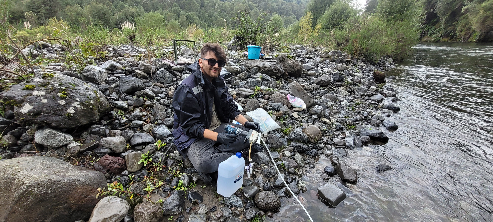
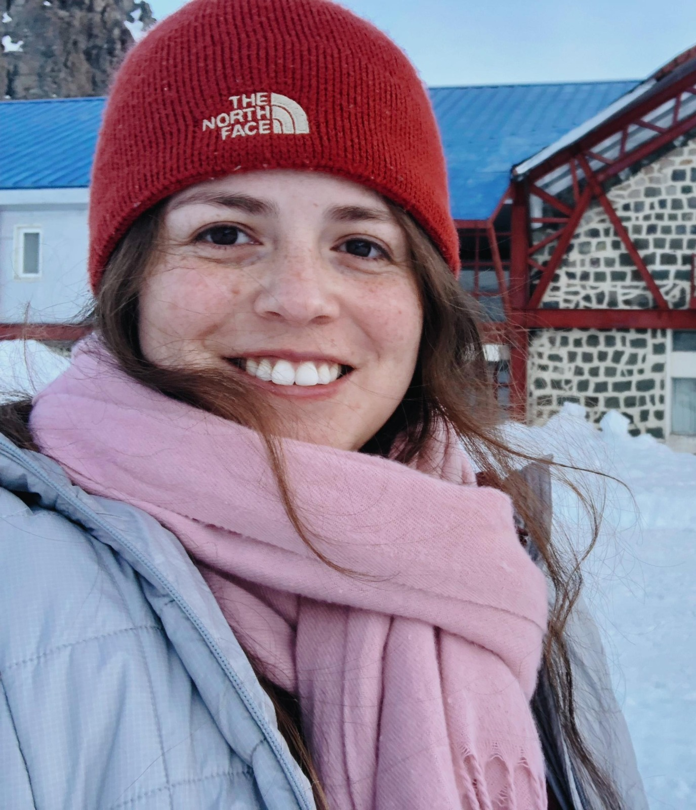

Nuestro Equipo
Gerdhard L. Jessen
Dr. rer. nat. MPI for Marine Microbiology, Bremen Universität, Germany.
Assistant Professor Institute of Marine and Limnological Sciences, Austral University of Chile. Geomicrobiology, microbial ecology and geochemistry

Jesús Tapia
Estudiante de Doctorado
Bioinformática, metagenómica y análisis de secuencias virales en ambientes marinos profundos.

Natalia Zumelzu
Estudiante de Doctorado
Geoquimica y geomicrobioogia. Interesada en los procesos del sistema tierra
